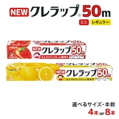
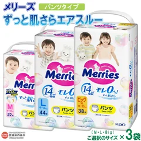
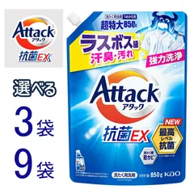
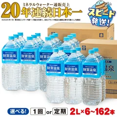
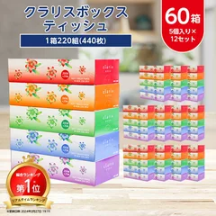
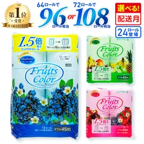

7位

茨城県小美玉市
NEWクレラップ 50m 8本
50m×8本（レギュラー・ミニの2種類）
寄付額18,000円2026年9月17日時点
動画で話したこと
- ラップを切らして困る人へ。1年ぶんがまとめて届きます
- レギュラーとミニの2種類。棚1段ぶんの場所があれば置けます
気になる声2026年9月30日で受付が終了します。ほしい人は今月中に
寄付額・内容・受付状況はリンク先でご確認ください
ふるさと納税 / 2026.09.17
ショート動画で紹介した7つです。食べ物ではなく、毎月かならず買う日用品にしぼりました。順番は楽天ふるさと納税のレビュー件数の多い順です。寄付額・内容量・受付状況は2026年9月17日に確認したものなので、お申し込みの前にリンク先でご確認ください。
07 ITEMS 動画で紹介したもの
順番は楽天ふるさと納税のレビュー件数の多い順です（2026年9月17日に確認。1位が6,425件、7位が74件）。返礼品の良し悪しの順ではありません。
7つ全部を申し込むと寄付額は合計83,500円です。控除される上限額は収入や家族構成で人それぞれなので、シミュレーションで確かめてからにしてください。
NEWクレラップ（7位）は2026年9月30日で受付が終了します。頼むなら今月中です。
2026年10月から返礼品の基準が変わるため、内容が変わる・受付が終わることがあります。

茨城県小美玉市
50m×8本（レギュラー・ミニの2種類）
寄付額18,000円2026年9月17日時点
動画で話したこと
気になる声2026年9月30日で受付が終了します。ほしい人は今月中に
寄付額・内容・受付状況はリンク先でご確認ください

愛媛県西条市
3袋（M・L・Bigから選ぶ）
寄付額14,500円2026年9月17日時点
動画で話したこと
気になる声発送まで最短2週間〜1か月かかります。今すぐ必要なぶんは別に買っておいて
寄付額・内容・受付状況はリンク先でご確認ください

和歌山県和歌山市
850g×3袋（和歌山工場製造）
寄付額11,000円2026年9月17日時点
動画で話したこと
気になる声詰め替え用なので、本体のボトルは別に用意しておいてください
寄付額・内容・受付状況はリンク先でご確認ください

鹿児島県垂水市
2L（通常便・定期便から選ぶ）
寄付額5,000円2026年9月17日時点
動画で話したこと
気になる声2Lの箱は場所を取ります。玄関の隅など、置く所を先に決めてから
寄付額・内容・受付状況はリンク先でご確認ください
山形県寒河江市
5kg（5kg〜60kgから選ぶ）
寄付額9,000円2026年9月17日時点
動画で話したこと
気になる声令和8年産の先行予約です。秋から順に届くので、すぐには来ません
寄付額・内容・受付状況はリンク先でご確認ください

栃木県小山市
220組(440枚)×60箱
寄付額14,000円2026年9月17日時点
動画で話したこと
気になる声60箱は押し入れ半段ぶんです。置く場所を先に空けておいてください
寄付額・内容・受付状況はリンク先でご確認ください

静岡県沼津市
24ロール or 64ロール（再生紙）
寄付額12,000円2026年9月17日時点
動画で話したこと
気になる声64ロールを選ぶとかなりの量になります。24ロールとどちらにするか先に決めて
寄付額・内容・受付状況はリンク先でご確認ください
SOURCE & NOTES
2026年9月17日に寄付額・内容量・レビュー件数を確認しました。